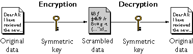
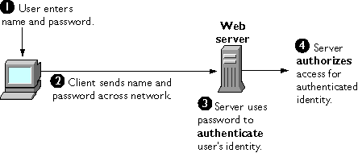
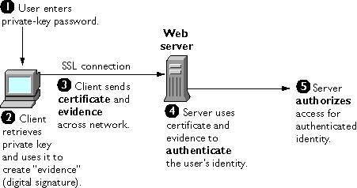
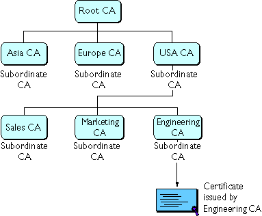
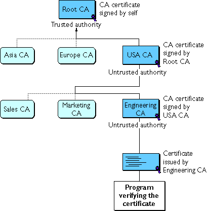
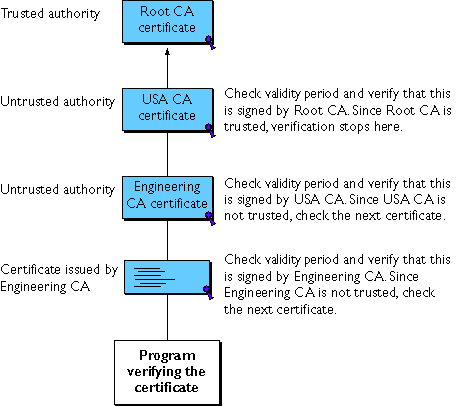
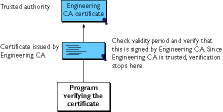
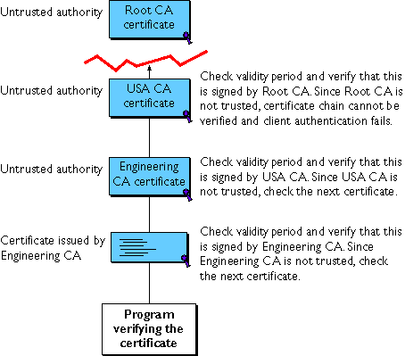

Public-key cryptography and related standards and techniques underlie security features of many Netscape products, including signed and encrypted email, form signing, object signing, single sign-on, and the Secure Sockets Layer (SSL) protocol. This document introduces the basic concepts of public-key cryptography.
Internet Security Issues
Encryption and Decryption
Digital Signatures
Certificates and Authentication
Managing Certificates
For more information on these topics and other aspects of cryptography, see Security Resources.
For an overview of SSL, see Introduction to SSL.
All communication over the Internet uses the Transmission Control Protocol/Internet Protocol (TCP/IP). TCP/IP allows information to be sent from one computer to another through a variety of intermediate computers and separate networks before it reaches its destination.
The great flexibility of TCP/IP has led to its worldwide acceptance as the basic Internet and intranet communications protocol. At the same time, the fact that TCP/IP allows information to pass through intermediate computers makes it possible for a third party to interfere with communications in the following ways:
Normally, users of the many cooperating computers that make up the Internet or other networks don't monitor or interfere with the network traffic that continuously passes through their machines. However, many sensitive personal and business communications over the Internet require precautions that address the threats listed above. Fortunately, a set of well-established techniques and standards known as public-key cryptography make it relatively easy to take such precautions.
Public-key cryptography facilitates the following tasks:
The sections that follow introduce the concepts of public-key cryptography that underlie these capabilities.
[Top]
Encryption is the process of transforming information so it is unintelligible to anyone but the intended recipient. Decryption is the process of transforming encrypted information so that it is intelligible again. A cryptographic algorithm, also called a cipher, is a mathematical function used for encryption or decryption. In most cases, two related functions are employed, one for encryption and the other for decryption.
With most modern cryptography, the ability to keep encrypted information secret is based not on the cryptographic algorithm, which is widely known, but on a number called a key that must be used with the algorithm to produce an encrypted result or to decrypt previously encrypted information. Decryption with the correct key is simple. Decryption without the correct key is very difficult, and in some cases impossible for all practical purposes.
The sections that follow introduce the use of keys for encryption and decryption.
Symmetric-Key Encryption
Public-Key Encryption
Key Length and Encryption Strength
With symmetric-key encryption, the encryption key can be calculated from the decryption key and vice versa. With most symmetric algorithms, the same key is used for both encryption and decryption, as shown in Figure 1.
Figure 1 Symmetric-key encryption

Implementations of symmetric-key encryption can be highly efficient, so that users do not experience any significant time delay as a result of the encryption and decryption. Symmetric-key encryption also provides a degree of authentication, since information encrypted with one symmetric key cannot be decrypted with any other symmetric key. Thus, as long as the symmetric key is kept secret by the two parties using it to encrypt communications, each party can be sure that it is communicating with the other as long as the decrypted messages continue to make sense.
Symmetric-key encryption is effective only if the symmetric key is kept secret by the two parties involved. If anyone else discovers the key, it affects both confidentiality and authentication. A person with an unauthorized symmetric key not only can decrypt messages sent with that key, but can encrypt new messages and send them as if they came from one of the two parties who were originally using the key.
Symmetric-key encryption plays an important role in the SSL protocol, which is widely used for authentication, tamper detection, and encryption over TCP/IP networks. SSL also uses techniques of public-key encryption, which is described in the next section.
The most commonly used implementations of public-key encryption are based on algorithms patented by RSA Data Security. Therefore, this section describes the RSA approach to public-key encryption.
Public-key encryption (also called asymmetric encryption) involves a pair of keys--a public key and a private key--associated with an entity that needs to authenticate its identity electronically or to sign or encrypt data. Each public key is published, and the corresponding private key is kept secret. (For more information about the way public keys are published, see Certificates and Authentication.) Data encrypted with your public key can be decrypted only with your private key. Figure 2 shows a simplified view of the way public-key encryption works.
Figure 2 Public-key encryption

The scheme shown in Figure 2 lets you freely distribute a public key, and only you will be able to read data encrypted using this key. In general, to send encrypted data to someone, you encrypt the data with that person's public key, and the person receiving the encrypted data decrypts it with the corresponding private key.
Compared with symmetric-key encryption, public-key encryption requires more computation and is therefore not always appropriate for large amounts of data. However, it's possible to use public-key encryption to send a symmetric key, which can then be used to encrypt additional data. This is the approach used by the SSL protocol.
As it happens, the reverse of the scheme shown in Figure 2 also works: data encrypted with your private key can be decrypted only with your public key. This would not be a desirable way to encrypt sensitive data, however, because it means that anyone with your public key, which is by definition published, could decrypt the data. Nevertheless, private-key encryption is useful, because it means you can use your private key to sign data with your digital signature--an important requirement for electronic commerce and other commercial applications of cryptography. Client software such as Communicator can then use your public key to confirm that the message was signed with your private key and that it hasn't been tampered with since being signed. Digital Signatures and subsequent sections describe how this confirmation process works.
In general, the strength of encryption is related to the difficulty of discovering the key, which in turn depends on both the cipher used and the length of the key. For example, the difficulty of discovering the key for the RSA cipher most commonly used for public-key encryption depends on the difficulty of factoring large numbers, a well-known mathematical problem.
Encryption strength is often described in terms of the size of the keys used to perform the encryption: in general, longer keys provide stronger encryption. Key length is measured in bits. For example, 128-bit keys for use with the RC4 symmetric-key cipher supported by SSL provide significantly better cryptographic protection than 40-bit keys for use with the same cipher. Roughly speaking, 128-bit RC4 encryption is 3 x 1026 times stronger than 40-bit RC4 encryption. (For more information about RC4 and other ciphers used with SSL, see Introduction to SSL.)
Different ciphers may require different key lengths to achieve the same level of encryption strength. The RSA cipher used for public-key encryption, for example, can use only a subset of all possible values for a key of a given length, due to the nature of the mathematical problem on which it is based. Other ciphers, such as those used for symmetric key encryption, can use all possible values for a key of a given length, rather than a subset of those values. Thus a 128-bit key for use with a symmetric-key encryption cipher would provide stronger encryption than a 128-bit key for use with the RSA public-key encryption cipher.
This difference explains why the RSA public-key encryption cipher must use a 512-bit key (or longer) to be considered cryptographically strong, whereas symmetric key ciphers can achieve approximately the same level of strength with a 64-bit key. Even this level of strength may be vulnerable to attacks in the near future.
Because the ability to surreptitiously intercept and decrypt encrypted information has historically been a significant military asset, the U.S. Government restricts export of cryptographic software, including most software that permits use of symmetric encryption keys longer than 40 bits. For detailed information about these restrictions as they apply to Netscape products, see Export Restrictions on International Sales.
[Top]
Encryption and decryption address the problem of eavesdropping, one of the three Internet security issues mentioned at the beginning of this document. But encryption and decryption, by themselves, do not address the other two problems mentioned in Internet Security Issues: tampering and impersonation.
This section describes how public-key cryptography addresses the problem of tampering. The sections that follow describe how it addresses the problem of impersonation.
Tamper detection and related authentication techniques rely on a mathematical function called a one-way hash (also called a message digest). A one-way hash is a number of fixed length with the following characteristics:
As mentioned in Public-Key Encryption, it's possible to use your private key for encryption and your public key for decryption. Although this is not desirable when you are encrypting sensitive information, it is a crucial part of digitally signing any data. Instead of encrypting the data itself, the signing software creates a one-way hash of the data, then uses your private key to encrypt the hash. The encrypted hash, along with other information, such as the hashing algorithm, is known as a digital signature.
Figure 3 shows a simplified view of the way a digital signature can be used to validate the integrity of signed data.
Figure 3 Using a digital signature to validate data integrity

Figure 3 shows two items transferred to the recipient of some signed data: the original data and the digital signature, which is basically a one-way hash (of the original data) that has been encrypted with the signer's private key. To validate the integrity of the data, the receiving software first uses the signer's public key to decrypt the hash. It then uses the same hashing algorithm that generated the original hash to generate a new one-way hash of the same data. (Information about the hashing algorithm used is sent with the digital signature, although this isn't shown in the figure.) Finally, the receiving software compares the new hash against the original hash. If the two hashes match, the data has not changed since it was signed. If they don't match, the data may have been tampered with since it was signed, or the signature may have been created with a private key that doesn't correspond to the public key presented by the signer.
If the two hashes match, the recipient can be certain that the public key used to decrypt the digital signature corresponds to the private key used to create the digital signature. Confirming the identity of the signer, however, also requires some way of confirming that the public key really belongs to a particular person or other entity. For a discussion of the way this works, see Certificates and Authentication.
The significance of a digital signature is comparable to the significance of a handwritten signature. Once you have signed some data, it is difficult to deny doing so later--assuming that the private key has not been compromised or out of the owner's control. This quality of digital signatures provides a high degree of nonrepudiation--that is, digital signatures make it difficult for the signer to deny having signed the data. In some situations, a digital signature may be as legally binding as a handwritten signature.
[Top]
A Certificate Identifies Someone or Something
Authentication Confirms an Identity
How Certificates Are Used
Contents of a Certificate
How CA Certificates Are Used to Establish Trust
A certificate is an electronic document used to identify an individual, a server, a company, or some other entity and to associate that identity with a public key. Like a driver's license, a passport, or other commonly used personal IDs, a certificate provides generally recognized proof of a person's identity. Public-key cryptography uses certificates to address the problem of impersonation (see Internet Security Issues).
To get a driver's license, you typically apply to a government agency, such as the Department of Motor Vehicles, which verifies your identity, your ability to drive, your address, and other information before issuing the license. To get a student ID, you apply to a school or college, which performs different checks (such as whether you have paid your tuition) before issuing the ID. To get a library card, you may need to provide only your name and a utility bill with your address on it.
Certificates work much the same way as any of these familiar forms of identification. Certificate authorities (CAs) are entities that validate identities and issue certificates. They can be either independent third parties or organizations running their own certificate-issuing server software (such as Netscape Certificate Server). The methods used to validate an identity vary depending on the policies of a given CA--just as the methods to validate other forms of identification vary depending on who is issuing the ID and the purpose for which it will be used. In general, before issuing a certificate, the CA must use its published verification procedures for that type of certificate to ensure that an entity requesting a certificate is in fact who it claims to be.
The certificate issued by the CA binds a particular public key to the name of the entity the certificate identifies (such as the name of an employee or a server). Certificates help prevent the use of fake public keys for impersonation. Only the public key certified by the certificate will work with the corresponding private key possessed by the entity identified by the certificate.
In addition to a public key, a certificate always includes the name of the entity it identifies, an expiration date, the name of the CA that issued the certificate, a serial number, and other information. Most importantly, a certificate always includes the digital signature of the issuing CA. The CA's digital signature allows the certificate to function as a "letter of introduction" for users who know and trust the CA but don't know the entity identified by the certificate.
For more information about the role of CAs, see How CA Certificates Are Used to Establish Trust.
Authentication is the process of confirming an identity. In the context of network interactions, authentication involves the confident identification of one party by another party. Authentication over networks can take many forms. Certificates are one way of supporting authentication.
Network interactions typically take place between a client, such as browser software running on a personal computer, and a server, such as the software and hardware used to host a Web site. Client authentication refers to the confident identification of a client by a server (that is, identification of the person assumed to be using the client software). Server authentication refers to the confident identification of a server by a client (that is, identification of the organization assumed to be responsible for the server at a particular network address).
Client and server authentication are not the only forms of authentication that certificates support. For example, the digital signature on an email message, combined with the certificate that identifies the sender, provide strong evidence that the person identified by that certificate did indeed send that message. Similarly, a digital signature on an HTML form, combined with a certificate that identifies the signer, can provide evidence, after the fact, that the person identified by that certificate did agree to the contents of the form. In addition to authentication, the digital signature in both cases ensures a degree of nonrepudiation--that is, a digital signature makes it difficult for the signer to claim later not to have sent the email or the form.
Client authentication is an essential element of network security within most intranets or extranets. The sections that follow contrast two forms of client authentication:
-
Password-Based Authentication. Almost all server software permits client authentication by means of a name and password. For example, a server might require a user to type a name and password before granting access to the server. The server maintains a list of names and passwords; if a particular name is on the list, and if the user types the correct password, the server grants access.
-
Certificate-Based Authentication. Client authentication based on certificates is part of the SSL protocol. The client digitally signs a randomly generated piece of data and sends both the certificate and the signed data across the network. The server uses techniques of public-key cryptography to validate the signature and confirm the validity of the certificate.
Figure 4 shows the basic steps involved in authenticating a client by means of a name and password. Figure 4 assumes the following:
Figure 4 Using a password to authenticate a client to a server

These are the steps shown in Figure 4:
-
In response to an authentication request from the server, the client displays a dialog box requesting the user's name and password for that server. The user must supply a name and password separately for each new server the user wishes to use during a work session.
-
The client sends the name and password across the network, either in the clear or over an encrypted SSL connection.
-
The server looks up the name and password in its local password database and, if they match, accepts them as evidence authenticating the user's identity.
-
The server determines whether the identified user is permitted to access the requested resource, and if so allows the client to access it.
With this arrangement, the user must supply a new password for each server, and the administrator must keep track of the name and password for each user, typically on separate servers.
As shown in the next section, one of the advantages of certificate-based authentication is that it can be used to replace the first three steps in Figure 2 with a mechanism that allows the user to supply just one password (which is not sent across the network) and allows the administrator to control user authentication centrally.
Figure 5 shows how client authentication works using certificates and the SSL Protocol. To authenticate a user to a server, a client digitally signs a randomly generated piece of data and sends both the certificate and the signed data across the network. For the purposes of this discussion, the digital signature associated with some data can be thought of as evidence provided by the client to the server. The server authenticates the user's identity on the strength of this evidence.
Like Figure 4, Figure 5 assumes that the user has already decided to trust the server and has requested a resource, and that the server has requested client authentication in the process of evaluating whether to grant access to the requested resource.
Figure 5 Using a certificate to authenticate a client to a server

Unlike the process shown in Figure 4, the process shown in Figure 5 requires the use of SSL. Figure 5 also assumes that the client has a valid certificate that can be used to identify the client to the server. Certificate-based authentication is generally considered preferable to password-based authentication because it is based on what the user has (the private key) as well as what the user knows (the password that protects the private key). However, it's important to note that these two assumptions are true only if unauthorized personnel have not gained access to the user's machine or password, the password for the client software's private key database has been set, and the software is set up to request the password at reasonably frequent intervals.
Important
Neither password-based authentication nor certificate-based authentication address
security issues related to physical access to individual machines or passwords. Public-
key cryptography can only verify that a private key used to sign some data
corresponds to the public key in a certificate. It is the user's responsibility to protect a
machine's physical security and to keep the private-key password secret.
These are the steps shown in Figure 3:
-
The client software, such as Communicator, maintains a database of the private keys that correspond to the public keys published in any certificates issued for that client. The client asks for the password to this database the first time the client needs to access it during a given session--for example, the first time the user attempts to access an SSL-enabled server that requires certificate-based client authentication. After entering this password once, the user doesn't need to enter it again for the rest of the session, even when accessing other SSL-enabled servers.
-
The client unlocks the private-key database, retrieves the private key for the user's certificate, and uses that private key to digitally sign some data that has been randomly generated for this purpose on the basis of input from both the client and the server. This data and the digital signature constitute "evidence" of the private key's validity. The digital signature can be created only with that private key and can be validated with the corresponding public key against the signed data, which is unique to the SSL session.
-
The client sends both the user's certificate and the evidence (the randomly generated piece of data that has been digitally signed) across the network.
-
The server uses the certificate and the evidence to authenticate the user's identity. (For a detailed discussion of the way this works, see Introduction to SSL.)
-
At this point the server may optionally perform other authentication tasks, such as checking that the certificate presented by the client is stored in the user's entry in an LDAP directory. The server then continues to evaluate whether the identified user is permitted to access the requested resource. This evaluation process can employ a variety of standard authorization mechanisms, potentially using additional information in an LDAP directory, company databases, and so on. If the result of the evaluation is positive, the server allows the client to access the requested resource.
As you can see by comparing Figure 5 to Figure 4, certificates replace the authentication portion of the interaction between the client and the server. Instead of requiring a user to send passwords across the network throughout the day, single sign-on requires the user to enter the private-key database password just once, without sending it across the network. For the rest of the session, the client presents the user's certificate to authenticate the user to each new server it encounters. Existing authorization mechanisms based on the authenticated user identity are not affected.
Types of Certificates
SSL Protocol
Signed and Encrypted Email
Form Signing
Single Sign-On
Object Signing
Five kinds of certificates are commonly used with Netscape products:
-
Client SSL certificates. Used to identify clients to servers via SSL (client authentication). Typically, the identity of the client is assumed to be the same as the identity of a human being, such as an employee in an enterprise. See Certificate-Based Authentication for a description of the way client SSL certificates are used for client authentication. Client SSL certificates can also be used for Form Signing and as part of a Single Sign-On solution.
Examples: A bank gives a customer a client SSL certificate that allows the bank's
servers to identify that customer and authorize access to the customer's accounts.
A company might give a new employee a client SSL certificate that allows the
company's servers to identify that employee and authorize access to the
company's servers.
-
Server SSL certificates. Used to identify servers to clients via SSL (server authentication). Server authentication may be used with or without client authentication. Server authentication is a requirement for an encrypted SSL session. See SSL Protocol.
Example: Internet sites that engage in electronic commerce (commonly known as
e-commerce) usually support certificate-based server authentication, at a
minimum, to establish an encrypted SSL session and to assure customers that they
are dealing with a web site identified with a particular company. The encrypted
SSL session ensures that personal information sent over the network, such as
credit card numbers, cannot easily be intercepted.
-
S/MIME certificates. Used for signed and encrypted email. As with client SSL certificates, the identity of the client is typically assumed to be the same as the identity of a human being, such as an employee in an enterprise. A single certificate may be used as both an S/MIME certificate and an SSL certificate. See Signed and Encrypted Email. S/MIME certificates can also be used for Form Signing and as part of a Single Sign-On solution.
Examples: A company deploys combined S/MIME and SSL certificates solely
for the purpose of authenticating employee identities, thus permitting signed
email and client SSL authentication but not encrypted email. Another company
issues S/MIME certificates solely for the purpose of both signing and encrypting
email that deals with sensitive financial or legal matters.
-
Object-signing certificates. Used to identify signers of Java code, JavaScript scripts, or other signed files. See Object Signing.
Example: A software company signs software distributed over the Internet to
provide users with some assurance that the software is a legitimate product of that
company. Using certificates and digital signatures in this manner can also make it
possible for users to identify and control the kind of access downloaded software
has to their computers.
-
CA certificates. Used to identify CAs. Client and server software use CA certificates to determine what other certificates can be trusted. See How CA Certificates Are Used to Establish Trust.
Example: The CA certificates stored in Communicator determine what other
certificates that copy of Communicator can authenticate. An administrator can
implement some aspects of corporate security policies by controlling the CA
certificates stored in each user's copy of Communicator.
The sections that follow describes how certificates are used by Netscape products.
The Secure Sockets Layer (SSL) protocol, which was originally developed by Netscape, is a set of rules governing server authentication, client authentication, and encrypted communication between servers and clients. SSL is widely used on the Internet, especially for interactions that involve exchanging confidential information such as credit card numbers.
SSL requires a server SSL certificate, at a minimum. As part of the initial "handshake" process, the server presents its certificate to the client to authenticate the server's identity. The authentication process uses Public-Key Encryption and Digital Signatures to confirm that the server is in fact the server it claims to be. Once the server has been authenticated, the client and server use techniques of Symmetric-Key Encryption, which is very fast, to encrypt all the information they exchange for the remainder of the session and to detect any tampering that may have occurred.
Servers may optionally be configured to require client authentication as well as server authentication. In this case, after server authentication is successfully completed, the client must also present its certificate to the server to authenticate the client's identity before the encrypted SSL session can be established.
For an overview of client authentication over SSL and how it differs from password-based authentication, see Authentication Confirms an Identity. For more detailed information about SSL, see Introduction to SSL.
Some email programs (including Messenger, which is part of Communicator) support digitally signed and encrypted email using a widely accepted protocol known as Secure Multipurpose Internet Mail Extension (S/MIME). Using S/MIME to sign or encrypt email messages requires the sender of the message to have an S/MIME certificate.
An email message that includes a digital signature provides some assurance that it was in fact sent by the person whose name appears in the message header, thus providing authentication of the sender. If the digital signature cannot be validated by the email software on the receiving end, the user will be alerted.
The digital signature is unique to the message it accompanies. If the message received differs in any way from the message that was sent--even by the addition or deletion of a comma--the digital signature cannot be validated. Therefore, signed email also provides some assurance that the email has not been tampered with. As discussed at the beginning of this document, this kind of assurance is known as nonrepudiation. In other words, signed email makes it very difficult for the sender to deny having sent the message. This is important for many forms of business communication. (For information about the way digital signatures work, see Digital Signatures.)
S/MIME also makes it possible to encrypt email messages. This is also important for some business users. However, using encryption for email requires careful planning. If the recipient of encrypted email messages loses his or her private key and does not have access to a backup copy of the key, for example, the encrypted messages can never be decrypted.
Network users are frequently required to remember multiple passwords for the various services they use. For example, a user might have to type a different password to log into the network, collect email, use directory services, use the corporate calendar program, and access various servers. Multiple passwords are an ongoing headache for both users and system administrators. Users have difficulty keeping track of different passwords, tend to choose poor ones, and tend to write them down in obvious places. Administrators must keep track of a separate password database on each server and deal with potential security problems related to the fact that passwords are sent over the network routinely and frequently.
Solving this problem requires some way for a user to log in once, using a single password, and get authenticated access to all network resources that user is authorized to use--without sending any passwords over the network. This capability is known as single sign-on.
Both client SSL certificates and S/MIME certificates can play a significant role in a comprehensive single sign-on solution. For example, one form of single sign-on supported by Netscape products relies on SSL client authentication (see Certificate-Based Authentication). A user can log in once, using a single password to the local client's private-key database, and get authenticated access to all SSL-enabled servers that user is authorized to use--without sending any passwords over the network. This approach simplifies access for users, because they don't need to enter passwords for each new server. It also simplifies network management, since administrators can control access by controlling lists of certificate authorities (CAs) rather than much longer lists of users and passwords.
In addition to using certificates, a complete single-sign on solution must address the need to interoperate with enterprise systems, such as the underlying operating system, that rely on passwords or other forms of authentication.
For information about the single sign-on support currently provided by Netscape products, see Single Sign-On Deployment Guide.
Many kinds of e-commerce require the ability to provide persistent proof that someone has authorized a transaction. Although SSL provides transient client authentication for the duration of an SSL connection, it does not provide persistent authentication for transactions that may occur during that connection. S/MIME provides persistent authentication for email, but e-commerce often involves filling in a form on a web page rather than sending an email.
The Netscape technology known as form signing addresses the need for persistent authentication of financial transactions. Form signing allows a user to associate a digital signature with web-based data generated as the result of a transaction, such as a purchase order or other financial document. The private key associated with either a client SSL certificate or an S/MIME certificate may be used for this purpose.
When a user clicks the Submit button on a web-based form that supports form signing, a dialog box appears that displays the exact text to be signed. The form designer can either specify the certificate that should be used or allow the user to select a certificate from among the client SSL and S/MIME certificates that are installed in Communicator. When the user clicks OK, the text is signed, and both the text and the digital signature are submitted to the server. The server can then use a Netscape utility called the Signature Verification Tool to validate the digital signature.
For more information about support for form signing in Netscape products, see Netscape Form Signing.
Communicator and other Netscape products support a set of tools and technologies called object signing. Object signing uses standard techniques of public-key cryptography to let users get reliable information about code they download in much the same way they can get reliable information about shrink-wrapped software.
Most importantly, object signing helps users and network administrators implement decisions about software distributed over intranets or the Internet--for example, whether to allow Java applets signed by a given entity to use specific computer capabilities on specific users' machines.
The "objects" signed with object signing technology can be applets or other Java code, JavaScript scripts, plug-ins, or any kind of file. The "signature" is a digital signature. Signed objects and their signatures are typically stored in a special file called a JAR file.
Software developers and others who wish to sign files using object-signing technology must first obtain an object-signing certificate.
For more information about support for object signing in Netscape products, see Netscape Object Signing: Establishing Trust for Downloaded Software.
The contents of certificates supported by Netscape and many other software companies are organized according to the X.509 v3 certificate specification, which has been recommended by the International Telecommunications Union (ITU), an international standards body, since 1988.
Users don't usually need to be concerned about the exact contents of a certificate. However, system administrators working with certificates may need some familiarity with the information provided here.
An X.509 v3 certificate binds a distinguished name (DN) to a public key. A DN is a series of name-value pairs, such as uid=doe, that uniquely identify an entity--that is, the certificate subject.
For example, this might be a typical DN for an employee of Netscape Communications Corporation:
uid=doe,e=doe@netscape.com,cn=John Doe,o=Netscape Communications Corp.,c=US
The abbreviations before each equal sign in this example have these meanings:
uid: user ID
e: email address
cn: the user's common name
o: organization
c: country
DNs may include a variety of other name-value pairs. They are used to identify both certificate subjects and entries in directories that support the Lightweight Directory Access Protocol (LDAP).
The rules governing the construction of DNs can be quite complex and are beyond the scope of this document. For comprehensive information about DNs, see A String Representation of Distinguished Names.
Every X.509 certificate consists of two sections:
-
The data section includes the following information:
-
The version number of the X.509 standard supported by the certificate.
-
The certificate's serial number. Every certificate issued by a CA has a serial number that is unique among the certificates issued by that CA.
-
Information
-
Information about the user's public key, including the algorithm used and a representation of the key itself.
-
The DN of the CA that issued the certificate.
-
The period during which the certificate is valid (for example, between 1:00 p.m. on November 15, 1996 and 1:00 p.m. November 15, 1997)
-
The DN of the certificate subject (for example, in a client SSL certificate this would be the user's DN), also called the subject name.
-
Optional certificate extensions, which may provide additional data used by the client or server. For example, the certificate type extension indicates the type of certificate--that is, whether it is a client SSL certificate, a server SSL certificate, a certificate for signing email, and so on. Certificate extensions can also be used for a variety of other purposes.
-
The signature section includes the following information:
Here are the data and signature sections of a certificate in human-readable format:
Certificate:
Data:
Version: v3 (0x2)
Serial Number: 3 (0x3)
Signature Algorithm: PKCS #1 MD5 With RSA Encryption
Issuer: OU=Ace Certificate Authority, O=Ace Industry, C=US
Validity:
Not Before: Fri Oct 17 18:36:25 1997
Not After: Sun Oct 17 18:36:25 1999
Subject: CN=Jane Doe, OU=Finance, O=Ace Industry, C=US
Subject Public Key Info:
Algorithm: PKCS #1 RSA Encryption
Public Key:
Modulus:
00:ca:fa:79:98:8f:19:f8:d7:de:e4:49:80:48:e6:2a:2a:86:
ed:27:40:4d:86:b3:05:c0:01:bb:50:15:c9:de:dc:85:19:22:
43:7d:45:6d:71:4e:17:3d:f0:36:4b:5b:7f:a8:51:a3:a1:00:
98:ce:7f:47:50:2c:93:36:7c:01:6e:cb:89:06:41:72:b5:e9:
73:49:38:76:ef:b6:8f:ac:49:bb:63:0f:9b:ff:16:2a:e3:0e:
9d:3b:af:ce:9a:3e:48:65:de:96:61:d5:0a:11:2a:a2:80:b0:
7d:d8:99:cb:0c:99:34:c9:ab:25:06:a8:31:ad:8c:4b:aa:54:
91:f4:15
Public Exponent: 65537 (0x10001)
Extensions:
Identifier: Certificate Type
Critical: no
Certified Usage:
SSL Client
Identifier: Authority Key Identifier
Critical: no
Key Identifier:
f2:f2:06:59:90:18:47:51:f5:89:33:5a:31:7a:e6:5c:fb:36:
26:c9
Signature:
Algorithm: PKCS #1 MD5 With RSA Encryption
Signature:
6d:23:af:f3:d3:b6:7a:df:90:df:cd:7e:18:6c:01:69:8e:54:65:fc:06:
30:43:34:d1:63:1f:06:7d:c3:40:a8:2a:82:c1:a4:83:2a:fb:2e:8f:fb:
f0:6d:ff:75:a3:78:f7:52:47:46:62:97:1d:d9:c6:11:0a:02:a2:e0:cc:
2a:75:6c:8b:b6:9b:87:00:7d:7c:84:76:79:ba:f8:b4:d2:62:58:c3:c5:
b6:c1:43:ac:63:44:42:fd:af:c8:0f:2f:38:85:6d:d6:59:e8:41:42:a5:
4a:e5:26:38:ff:32:78:a1:38:f1:ed:dc:0d:31:d1:b0:6d:67:e9:46:a8:
dd:c4
Here is the same certificate displayed in the 64-byte-encoded form interpreted by software:
-----BEGIN CERTIFICATE-----
MIICKzCCAZSgAwIBAgIBAzANBgkqhkiG9w0BAQQFADA3MQswCQYDVQQGEwJVUzER
MA8GA1UEChMITmV0c2NhcGUxFTATBgNVBAsTDFN1cHJpeWEncyBDQTAeFw05NzEw
MTgwMTM2MjVaFw05OTEwMTgwMTM2MjVaMEgxCzAJBgNVBAYTAlVTMREwDwYDVQQK
EwhOZXRzY2FwZTENMAsGA1UECxMEUHViczEXMBUGA1UEAxMOU3Vwcml5YSBTaGV0
dHkwgZ8wDQYJKoZIhvcNAQEFBQADgY0AMIGJAoGBAMr6eZiPGfjX3uRJgEjmKiqG
7SdATYazBcABu1AVyd7chRkiQ31FbXFOGD3wNktbf6hRo6EAmM5/R1AskzZ8AW7L
iQZBcrXpc0k4du+2Q6xJu2MPm/8WKuMOnTuvzpo+SGXelmHVChEqooCwfdiZywyZ
NMmrJgaoMa2MS6pUkfQVAgMBAAGjNjA0MBEGCWCGSAGG+EIBAQQEAwIAgDAfBgNV
HSMEGDAWgBTy8gZZkBhHUfWJM1oxeuZc+zYmyTANBgkqhkiG9w0BAQQFAAOBgQBt
I6/z07Z635DfzX4XbAFpjlRl/AYwQzTSYx8GfcNAqCqCwaSDKvsuj/vwbf91o3j3
UkdGYpcd2cYRCgKi4MwqdWyLtpuHAH18hHZ5uvi00mJYw8W2wUOsY0RC/a/IDy84
hW3WWehBUqVK5SY4/zJ4oTjx7dwNMdGwbWfpRqjd1A==
-----END CERTIFICATE-----
Certificate authorities (CAs) are entities that validate identities and issue certificates. They can be either independent third parties or organizations running their own certificate-issuing server software (such as the Netscape Certificate Server). A list of third-party certificate authorities is available at Certificate Authority Services.
Any client or server software that supports certificates maintains a collection of trusted CA certificates. These CA certificates determine which other certificates the software can validate--in other words, which issuers of certificates the software can trust. In the simplest case, the software can validate only certificates issued by one of the CAs for which it has a certificate. It's also possible for a trusted CA certificate to be part of a chain of CA certificates, each issued by the CA above it in a certificate hierarchy.
The sections that follow explains how certificate hierarchies and certificate chains determine what certificates software can trust.
CA Hierarchies
Certificate Chains
Verifying a Certificate Chain
In large organizations, it may be appropriate to delegate the responsibility for issuing certificates to several different certificate authorities. For example, the number of certificates required may be too large for a single CA to maintain; different organizational units may have different policy requirements; or it may be important for a CA to be physically located in the same geographic area as the people to whom it is issuing certificates.
It's possible to delegate certificate-issuing responsibilities to subordinate CAs. The X.509 standard includes a model for setting up a hierarchy of CAs like that shown in Figure 6.
Figure 6 Example of a hierarchy of certificate authorities

In this model, the root CA is at the top of the hierarchy. The root CA's certificate is a self-signed certificate: that is, the certificate is digitally signed by the same entity--the root CA--that the certificate identifies. The CAs that are directly subordinate to the root CA have CA certificates signed by the root CA. CAs under the subordinate CAs in the hierarchy have their CA certificates signed by the higher-level subordinate CAs.
Organizations have a great deal of flexibility in terms of the way they set up their CA hierarchies. Figure 6 shows just one example; many other arrangements are possible.
CA hierarchies are reflected in certificate chains. A certificate chain is series of certificates issued by successive CAs. Figure 7 shows a certificate chain leading from a certificate that identifies some entity through two subordinate CA certificates to the CA certificate for the root CA (based on the CA hierarchy shown in Figure 6).
Figure 7 Example of a certificate chain

A certificate chain traces a path of certificates from a branch in the hierarchy to the root of the hierarchy. In a certificate chain, the following occur:
Certificate chain verification is the process of making sure a given certificate chain is well-formed, valid, properly signed, and trustworthy. Netscape software uses the following procedure for forming and verifying a certificate chain, starting with the certificate being presented for authentication:
-
The certificate validity period is checked against the current time provided by the verifier's system clock.
-
The issuer's certificate is located. The source can be either the verifier's local certificate database (on that client or server) or the certificate chain provided by the subject (for example, over an SSL connection).
-
The certificate signature is verified using the public key in the issuer's certificate.
-
If the issuer's certificate is trusted by the verifier in the verifier's certificate database, verification stops successfully here. Otherwise, the issuer's certificate is checked to make sure it contains the appropriate subordinate CA indication in the Netscape certificate type extension, and chain verification returns to step 1 to start again, but with this new certificate. Figure 8 presents an example of this process.
Figure 8 Verifying a certificate chain all the way to the root CA

Figure 8 shows what happens when only Root CA is included in the verifier's local database. If a certificate for one of the intermediate CAs shown in Figure 8, such as Engineering CA, is found in the verifier's local database, verification stops with that certificate, as shown in Figure 9.
Figure 9 Verifying a certificate chain to an intermediate CA

Expired validity dates, an invalid signature, or the absence of a certificate for the issuing CA at any point in the certificate chain causes authentication to fail. For example, Figure 10 shows how verification fails if neither the Root CA certificate nor any of the intermediate CA certificates are included in the verifier's local database.
Figure 10 A certificate chain that can't be verified

For general information about the way digital signatures work, see Digital Signatures. For a more detailed description of the signature verification process in the context of SSL client and server authentication, see Introduction to SSL.
[Top]
The set of standards and services that facilitate the use of public-key cryptography and X.509 v3 certificates in a networked environment is called the public key infrastructure (PKI). PKI management is complex topic beyond the scope of this document. The sections that follow introduce some of the specific certificate management issues addressed by Netscape products.
Issuing Certificates
Certificates and the LDAP Directory
Key Management
Renewing and Revoking Certificates
Registration Authorities
The process for issuing a certificate depends on the certificate authority that issues it and the purpose for which it will be used. The process for issuing nondigital forms of identification varies in similar ways. For example, if you want to get a generic ID card (not a driver's license) from the Department of Motor Vehicles in California, the requirements are straightforward: you need to present some evidence of your identity, such as a utility bill with your address on it and a student identity card. If you want to get a regular driving license, you also need to take a test--a driving test when you first get the license, and a written test when you renew it. If you want to get a commercial license for an eighteen-wheeler, the requirements are much more stringent. If you live in some other state or country, the requirements for various kinds of licenses will differ.
Similarly, different CAs have different procedures for issuing different kinds of certificates. In some cases the only requirement may be your email address. In other cases, your Unix or NT login and password may be sufficient. At the other end of the scale, for certificates that identify people who can authorize large expenditures or make other sensitive decisions, the issuing process may require notarized documents, a background check, and a personal interview.
Depending on an organization's policies, the process of issuing certificates can range from being completely transparent for the user to requiring significant user participation and complex procedures. In general, processes for issuing certificates should be highly flexible, so organizations can tailor them to their changing needs.
The Netscape Certificate Server, part of the Mission Control family of products, allows an organization to set up its own certificate authority and issue certificates.
Issuing certificates is one of several managements tasks that can be handled by separate Registration Authorities.
The Lightweight Directory Access Protocol (LDAP) for accessing directory services supports great flexibility in the management of certificates within an organization. System administrators can store much of the information required to manage certificates in an LDAP-compliant directory. For example, a CA can use information in a directory to prepopulate a certificate with a new employee's legal name and other information. The CA can leverage directory information in other ways to issue certificates one at a time or in bulk, using a range of different identification techniques depending on the security policies of a given organization. Other routine management tasks, such as Key Management and Renewing and Revoking Certificates, can be partially or fully automated with the aid of the directory.
Information stored in the directory can also be used with certificates to control access to various network resources by different users or groups. Issuing certificates and other certificate management tasks can thus be an integral part of user and group management.
In general, high-performance directory services are an essential ingredient of any certificate management strategy. The Netscape Directory Server, part of the Mission Control family of products, is fully integrated with the Netscape Certificate Server to provide a comprehensive certificate management solution.
Before a certificate can be issued, the public key it contains and the corresponding private key must be generated. Sometimes it may be useful to issue a single person one certificate and key pair for signing operations, and another certificate and key pair for encryption operations. Separate signing and encryption certificates make it possible to keep the private signing key on the local machine only, thus providing maximum nonrepudiation, and to back up the private encryption key in some central location where it can be retrieved in case the user loses the original key or leaves the company.
Keys can be generated by client software or generated centrally by the CA and distributed to users via an LDAP directory. There are trade-offs involved in choosing between local and centralized key generation. For example, local key generation provides maximum nonrepudiation, but may involve more participation by the user in the issuing process. Flexible key management capabilities are essential for most organizations.
Key recovery, or the ability to retrieve backups of encryption keys under carefully defined conditions, can be a crucial part of certificate management (depending on how an organization uses certificates). Key recovery schemes usually involve an m of n mechanism: for example, m of n managers within an organization might have to agree, and each contribute a special code or key of their own, before a particular person's encryption key can be recovered. This kind of mechanism ensures that several authorized personnel must agree before an encryption key can be recovered.
Like a driver's license, a certificate specifies a period of time during which it is valid. Attempts to use a certificate for authentication before or after its validity period will fail. Therefore, mechanisms for managing certificate renewal are essential for any certificate management strategy. For example, an administrator may wish to be notified automatically when a certificate is about to expire, so that an appropriate renewal process can be completed in plenty of time without causing the certificate's subject any inconvenience. The renewal process may involve reusing the same public-private key pair or issuing a new one.
A driver's license can be suspended even if it has not expired--for example, as punishment for a serious driving offense. Similarly, it's sometimes necessary to revoke a certificate before it has expired--for example, if an employee leaves a company or moves to a new job within the company.
Certificate revocation can be handled in several different ways. For some organizations, it may be sufficient to set up servers so that the authentication process includes checking the directory for the presence of the certificate being presented. When an administrator revokes a certificate, the certificate can be automatically removed from the directory, and subsequent authentication attempts with that certificate will fail even though the certificate remains valid in every other respect. Another approach involves publishing a certificate revocation list (CRL)--that is, a list of revoked certificates--to the directory at regular intervals and checking the list as part of the authentication process. For some organizations, it may be preferable to check directly with the issuing CA each time a certificate is presented for authentication. This procedure is sometimes called real-time status checking.
Interactions between entities identified by certificates (sometimes called end entities) and CAs are an essential part of certificate management. These interactions include operations such as registration for certification, certificate retrieval, certificate renewal, certificate revocation, and key backup and recovery. In general, a CA must be able to authenticate the identities of end entities before responding to the requests. In addition, some requests need to be approved by authorized administrators or managers before being services.
As previously discussed, the means used by different CAs to verify an identity before issuing a certificate can vary widely, depending on the organization and the purpose for which the certificate will be used. To provide maximum operational flexibility, interactions with end entities can be separated from the other functions of a CA and handled by a separate service called a Registration Authority (RA).
An RA acts as a front end to a CA by receiving end entity requests, authenticating them, and forwarding them to the CA. After receiving a response from the CA, the RA notifies the end entity of the results. RAs can be helpful in scaling an PKI across different departments, geographical areas, or other operational units with varying policies and authentication requirements.
Future versions of the Netscape Certificate Server will support the creation of customizable registration authorities.
[Top]
Last Updated: 10/09/98 10:35:45